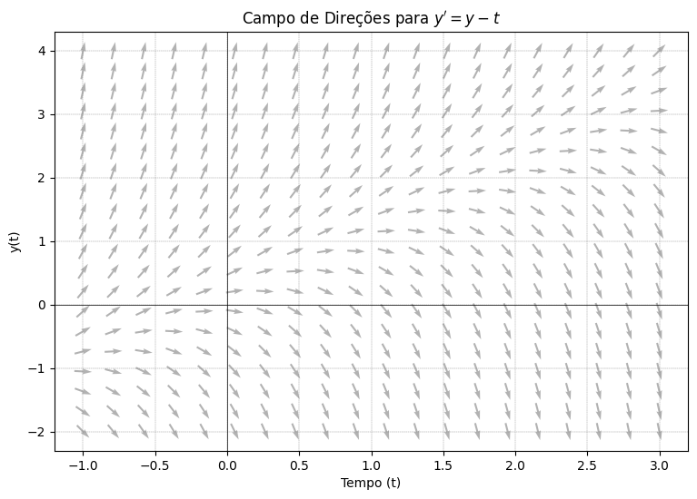
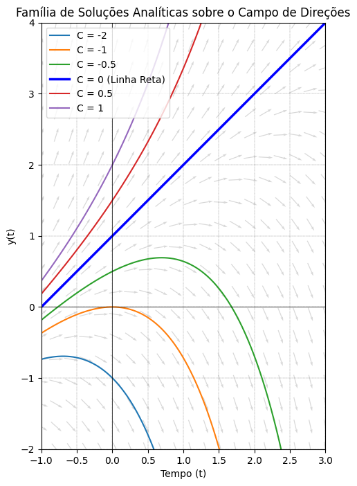
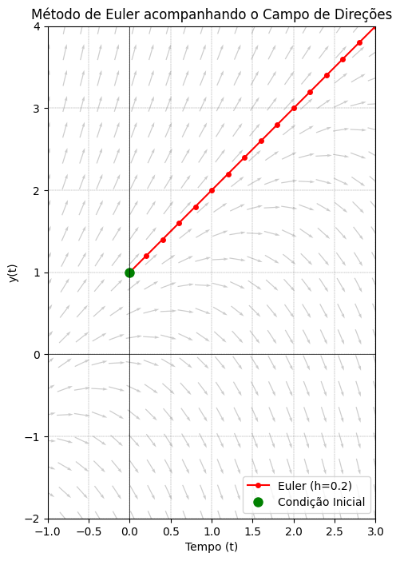

Campos de Direções e o Método de Euler#
Até agora, falamos sobre encontrar a solução de uma Equação Diferencial (ED) de forma analítica, ou seja, manipulando equações para encontrar uma fórmula exata, como \(y(t) = e^{kt}\).
Mas o que a equação diferencial \(y' = f(t, y)\) nos diz visualmente?
A Derivada como Inclinação#
Lembre-se do Cálculo 1: a derivada \(y'(t)\) nada mais é do que a inclinação da reta tangente à curva \(y(t)\) em um determinado ponto.
Quando temos uma equação diferencial na forma:
A matemática está nos dando uma bússola. Ela diz: Se a solução passar pelo ponto \((t, y)\), a inclinação dela neste exato momento será \(f(t, y)\).
Se calcularmos essa inclinação para vários pontos em um plano e desenharmos pequenos segmentos de reta apontando para a direção correta, criamos o que chamamos de Campo de Direções. Ele nos mostra o «fluxo» das soluções, como se fossem as correntes de um rio. A solução de uma ED é simplesmente um barco solto nesse rio: ele segue o fluxo da correnteza.
Vamos visualizar isso em Python com um exemplo clássico. Considere a equação:
import numpy as np
import matplotlib.pyplot as plt
# Definindo a ED: y' = f(t, y)
def f(t, y):
return y - t
# Criando uma grade de pontos no plano (t, y)
t_grid = np.linspace(-1, 3, 20)
y_grid = np.linspace(-2, 4, 20)
T, Y = np.meshgrid(t_grid, y_grid)
# Calculando a inclinação em cada ponto da grade
# Para o quiver (gráfico de setas), o vetor direção é (1, y')
dT = np.ones(T.shape)
dY = f(T, Y)
# Normalizando os vetores para que todas as setinhas tenham o mesmo tamanho (estética)
L = np.sqrt(dT**2 + dY**2)
dT_norm = dT / L
dY_norm = dY / L
# Plotando o Campo de Direções
plt.figure(figsize=(9, 6))
plt.quiver(T, Y, dT_norm, dY_norm, color='gray', alpha=0.6, pivot='mid')
plt.title("Campo de Direções para $y' = y - t$")
plt.xlabel("Tempo (t)")
plt.ylabel("y(t)")
plt.axhline(0, color='black', linewidth=0.5)
plt.axvline(0, color='black', linewidth=0.5)
plt.grid(color='gray', linestyle='--', linewidth=0.3)
plt.show()

A Família de Soluções e a Condição Inicial#
Ao olhar para o campo de direções acima, você provavelmente consegue imaginar curvas suaves acompanhando as setas. Existem infinitas curvas possíveis! Cada curva é uma solução diferente.
O que define qual dessas curvas é a «nossa» solução? A Condição Inicial (CI). Ao definirmos um ponto de partida \((t_0, y_0)\), escolhemos exatamente qual correnteza o nosso barco vai pegar. Variar a condição inicial (que matematicamente significa mudar a constante de integração) é simplesmente soltar o barco em um ponto diferente do rio.
Assim, escolhemos uma condição inicial e seguimos o fluxo. Para isso, resolvemos a ED. Há duas formas de fazer isso.
Duas formas de resolver o problema: Analítica vs. Numérica#
Na prática, quando nos deparamos com uma Equação Diferencial, temos dois grandes caminhos para resolvê-la:
A abordagem Analítica (Exata): É quando usamos manipulações algébricas e técnicas de integração para encontrar uma fórmula fechada para a função \(y(t)\). O resultado é uma equação matemática contínua.
A abordagem Numérica (Aproximada): É quando usamos computadores e algoritmos para encontrar os valores numéricos da função em pontos específicos no tempo, sem nunca descobrir a fórmula exata por trás dela. A saída é apenas um conjunto de pontos (uma tabela de dados).
Nos próximos capítulos, aprenderemos técnicas analíticas. Para a nossa equação de exemplo \(y' = y - t\), se aplicarmos um método chamado «Fator Integrante» (que veremos em breve), chegaremos à seguinte Solução Geral:
Onde \(C\) é a nossa constante de integração.
Verificando a solução à mão#
Em Equações Diferenciais, você raramente precisa ficar na dúvida se acertou ou errou uma questão. Basta pegar a sua solução e jogar de volta na equação original! Vamos testar se a fórmula que encontramos realmente obedece a \(y' = y - t\).
Primeiro, calculamos a derivada da nossa solução \(y(t)\):
Agora, substituímos \(y\) e \(y'\) na equação original (\(y' = y - t\)):
A igualdade é verdadeira! Isso prova que a nossa fórmula está correta.
O termo \(C\) na fórmula significa que temos uma família infinita de soluções. Cada valor de \(C\) representa uma curva diferente no nosso campo de direções. Vamos plotar algumas dessas curvas exatas sobre o campo que geramos lá em cima e ver a mágica acontecer.
# Criando um vetor de tempo mais denso para o traçado suave das curvas exatas
t_smooth = np.linspace(-1, 3, 100)
# Redesenhando o campo de direções (com as correções geométricas)
plt.figure(figsize=(8, 8))
plt.quiver(T, Y, dT_norm, dY_norm, color='gray', alpha=0.3, pivot='mid',
angles='xy', scale_units='xy', scale=5)
# Valores de C que queremos testar
valores_C = [-2, -1, -0.5, 0, 0.5, 1]
# Plotando a família de soluções exatas
for C in valores_C:
# A fórmula da nossa solução analítica
y_exato = t_smooth + 1 + C * np.exp(t_smooth)
# Vamos destacar a curva onde C=0
if C == 0:
plt.plot(t_smooth, y_exato, 'b-', linewidth=2.5, label='C = 0 (Linha Reta)')
else:
plt.plot(t_smooth, y_exato, linewidth=1.5, label=f'C = {C}')
plt.title("Família de Soluções Analíticas sobre o Campo de Direções")
plt.xlabel("Tempo (t)")
plt.ylabel("y(t)")
plt.axhline(0, color='black', linewidth=0.5)
plt.axvline(0, color='black', linewidth=0.5)
# Travando os limites para não deformar o gráfico com exponenciais explodindo
plt.xlim(-1, 3)
plt.ylim(-2, 4)
# Aspect ratio 1:1 e legenda
plt.gca().set_aspect('equal')
plt.legend(loc='upper left')
plt.grid(color='gray', linestyle='--', linewidth=0.3)
plt.show()

O Método de Euler: Seguindo o fluxo passo a passo#
E se não soubermos integrar a equação? (Na prática da engenharia, isso acontece muito!). Podemos usar a própria geometria do campo de direções para «desenhar» a solução aproximada. Essa é a base do Método de Euler, o método numérico mais fundamental para resolver EDs.
A lógica é a seguinte:
Você está no ponto inicial \((t_0, y_0)\).
Você calcula a inclinação neste ponto: \(y' = f(t_0, y_0)\).
Você caminha em linha reta nessa direção por um pequeno passo de tempo \(h\).
Chegando no novo ponto \((t_1, y_1)\), você olha novamente a «bússola» da ED, calcula a nova inclinação e repete o processo.
Matematicamente, a atualização a cada passo é:
Vamos implementar isso e ver como a aproximação numérica caminha sobre o nosso campo de direções!
# Implementação do Método de Euler
def euler_method(f, t0, y0, h, n_steps):
t_vals = np.zeros(n_steps + 1)
y_vals = np.zeros(n_steps + 1)
t_vals[0] = t0
y_vals[0] = y0
for i in range(n_steps):
# Calcula a inclinação atual
slope = f(t_vals[i], y_vals[i])
# Dá o passo de tamanho h
t_vals[i+1] = t_vals[i] + h
y_vals[i+1] = y_vals[i] + h * slope
return t_vals, y_vals
# Vamos simular começando em y(0) = 1, com passo h=0.2
t0, y0 = 0, 1
h = 0.2
n_steps = 15
t_euler, y_euler = euler_method(f, t0, y0, h, n_steps)
# Redesenhando o campo e colocando a solução do Euler por cima
plt.figure(figsize=(8, 8)) # Deixamos mais quadrada para uma visualização geométrica ideal
# CORREÇÃO: angles='xy' garante que a seta siga os dados, e scale_units ajusta o tamanho
plt.quiver(T, Y, dT_norm, dY_norm, color='gray', alpha=0.4, pivot='mid',
angles='xy', scale_units='xy', scale=5)
# Plotando os passos do método de Euler
plt.plot(t_euler, y_euler, 'ro-', label=f'Euler (h={h})', markersize=4)
plt.plot(t0, y0, 'go', label='Condição Inicial', markersize=8) # Ponto inicial verde
plt.title("Método de Euler acompanhando o Campo de Direções")
plt.xlabel("Tempo (t)")
plt.ylabel("y(t)")
plt.axhline(0, color='black', linewidth=0.5)
plt.axvline(0, color='black', linewidth=0.5)
plt.xlim(-1, 3)
plt.ylim(-2, 4)
plt.legend()
plt.grid(color='gray', linestyle='--', linewidth=0.3)
# CORREÇÃO 2 (Opcional, mas muito didática): Força os eixos a terem a mesma escala visual
plt.gca().set_aspect('equal')
plt.show()

Observe como os pontos vermelhos seguem fielmente a direção apontada pelas setas do campo!
É claro que, como andamos em linha reta a cada passo, o Método de Euler comete um pequeno erro ao longo do caminho, pois a solução real é uma curva suave, não uma sequência de retas. Se o passo \(h\) for grande demais, podemos «desgarrar» muito da curva real. Para melhorar a precisão, basta dar passos mais curtos (diminuir \(h\)) ou usar métodos numéricos mais sofisticados, como os métodos de Runge-Kutta, que veremos futuramente na sua formação computacional.